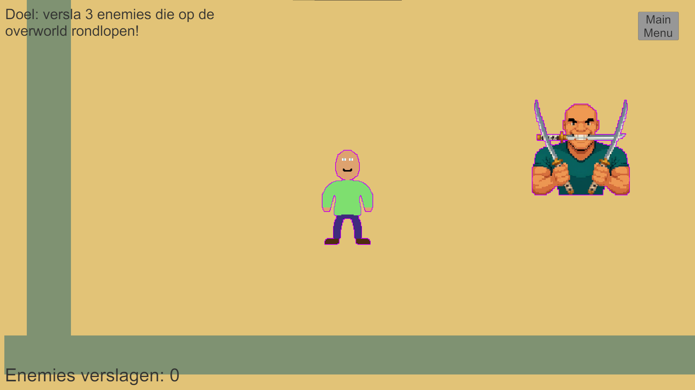
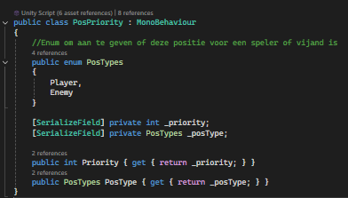
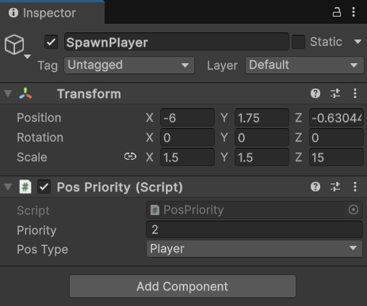
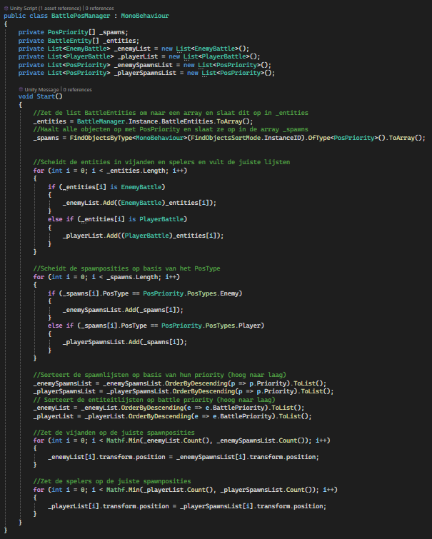
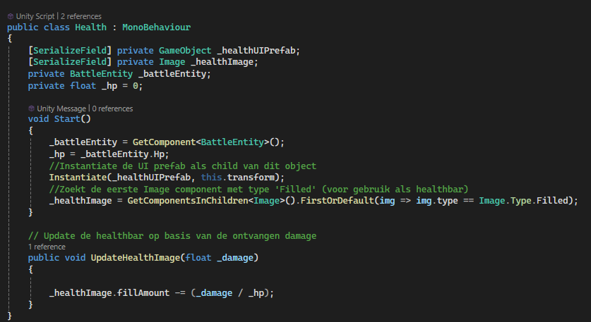

(In de afbeelding hierboven is een battle te zien)
KaperKronieken is een 2D-spel waarin de speler het opneemt tegen vijanden in een gevechtssysteem dat
sterk lijkt op dat van een klassiek RPG spel. Dit project is ontwikkeld voor de opdracht reusable
components, waarbij herbruikbaarheid van code centraal stond. Zowel de vijanden als de speler maken
tijdens de gevechten gebruik van herbruikbare componenten.
Bij het ontwikkelen van dit spel heb ik geprobeerd te programmeren volgens het S.O.L.I.D.-principe, wat
zorgt voor een goed gestructureerde en uitbreidbare codebasis. Enkele voorbeelden van herbruikbare
componenten zijn: Health, TargetEntity, Shield.
Naast de gevechten is er ook een overworld waarin je vrij kunt rondlopen. Tijdens het verkennen kun je
vijanden tegenkomen. Zodra je in de buurt van een vijand komt, zal deze je opmerken en achter je aan
gaan. Word je gepakt? Dan beland je direct in een battle.
(In de afbeelding hieronder is de overworld te zien)

Code
Positie van spelers voor een battle

Bovenstaand script wordt op een leeg GameObject gezet. Daarna kun je in de Inspector aangeven welk type het is:
een spawn voor een speler of voor een enemy. Ook kun je aangeven hoe belangrijk die plek is met priority (zie afbeelding hieronder).
De speler heeft ook een int die BattlePriority heet.
Zo wordt de speler met de hoogste priority op de plek met de hoogste priority gezet.

Het script hieronder sorteert de spawnposities en de entiteiten, en plaatst ze vervolgens op de juiste manier zodat ze op de correcte plek komen te staan.

Herbruikbaar component voorbeeld

Het script hierboven is een voorbeeld van een component die vaker wordt hergebruikt. Het is een vrij simpel script,
eigenlijk is het enige wat het doet een healthbar instantiëren en daarna wordt hij gebruikt om de healthbar te updaten als de entiteit damage krijgt.